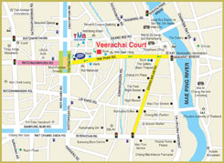

Veerachai Court
Chiang Mai
Chiang Mai
Veerachai Court, Chiang Mai
19 Thapae Rd., Soi 2, Muang, Chiang Mai 50300
Tel.+66 (0) 5325 1047 to 54 Fax.+66 (0) 5325 2402
e-mail : info@veerachaicourt.com
Copyright © All rights reserved. www.veerachaicourt.com web site developed by G7
Location
Located in the heart of Chiang Mai in a peaceful location, Veerachai Court is only a short walking distance to Thapae Road with a convenient access to all kinds of local transportation to anywhere in the district area. Veerachai Court staffs are willing to serve you with a warm welcome, friendliness and honesty.
Neighbouring places
As Thapae Road has been one of the major business areas of Chiang Mai since the olden days as well as the main route from Nawarat Bridge to Thapae Gate (the grand activity ground of the town), many banks, shopping centres and shop houses are situated in this area.

Pink area : Sunday Market
The pink area on the map indicates the location of the lively Sunday Market of Chiang Mai. The Sunday Market runs on Sundays along Ratchadamnoen Road featuring shopping, food and music. Expect to find activities of all kinds alongside special theme events for young and old alike. You are recommended to go there from 4 pm on, when the weather is cooling down and most vendors have already set up shops.
Yellow area : Tourist areas
The yellow area on the map is where Thapae Road and Chang Khlan Road, the two major business and tourist areas of Chiang Mai, are situated. Many banks, shopping centres, shop houses as well as Thai and International restaurants are nestled there. If you prefer shopping at night, you can enjoy the nightly vibrancy of Chiang Mai at Chiang Mai Night Bazaar located along Chang Khlan Road, where an amazing variety of local products and handicrafts are awaiting you.
Central business district
- -Thapae Road (Thapae Gate and old city)
- Chang Khlan Road (Night Bazaar)
Banks with currency exchange service
- Bangkok Bank
- Krung Thai Bank
- Siam Commercial Bank
- Kasikornbank
- Bank of Ayudhya
- Siam City Bank
- Western Union
Transportation
- 15 minutes to International Airport
- 20 minutes to Railway Station
- 15 minutes to Bus Station
- Convenient access to all kinds of local transportation: red minibus (rot daeng), Tuk Tuk, local bus
Universities: 20 minutes to the well-known universities of Chiang Mai
- Chiang Mai University
- Payap University
Shopping Centres
- A walking distance to Night Bazaar
- 15 minutes by car to Central Airport Plaza
- 10 minutes by car to Central Kaad Suan Kaew
Hospital: 10-15 minutes to major hospitals
- Chiang Mai Ram 1
- Maharaj
- McCormic
Others
- Famous local market: Sunday market, Warorot Market and Ton Lam Yai Market with the flower market nearby
- Post office
- Consulate